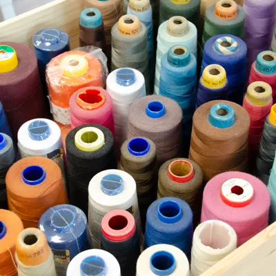
Änderungsschneiderei
Kürzen, auslassen, einnehmen oder flicken. Ihr Lieblingsstück erhält wieder die richtige Form.
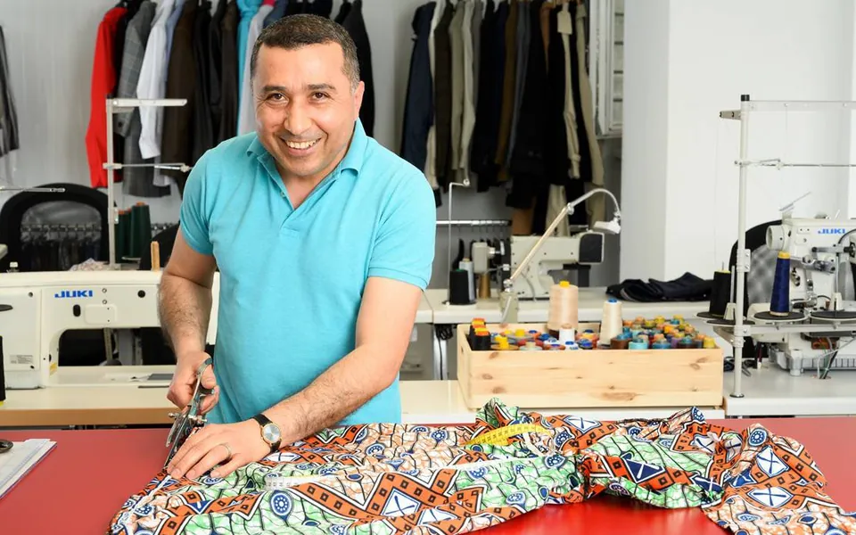
Schneiderei Leon Sido · Baden
Ändern, flicken und nach Mass nähen. Kleine Arbeiten oft sofort, während Sie warten.
Seit 2003 in Baden. Qualität und Termintreue sind meine obersten Prioritäten. Dafür stehe ich mit meinem Namen ein.
Zwei Klicks, und Sie wissen, wie ich Ihnen helfen kann und wie lange es ungefähr dauert.
Wählen Sie links ein Kleidungsstück und das Problem. Hier steht dann, wie es weitergeht.
Hose zu eng? Ärmel zu lang? Fast alles lässt sich auf Ihre Masse ändern. Bringen Sie das Stück vorbei. Ich schaue es mir an und sage Ihnen ehrlich, ob es sich lohnt und was es kostet.

Kürzen, auslassen, einnehmen oder flicken. Ihr Lieblingsstück erhält wieder die richtige Form.
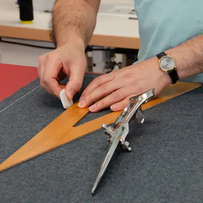
Abendkleid, Gilet, Hemd oder Hose, auch als Kopie eines Lieblingsstücks. Sie besprechen es mit mir, ich nehme Mass, Sie probieren den Probeschnitt an, dann wird alles fertig verarbeitet.
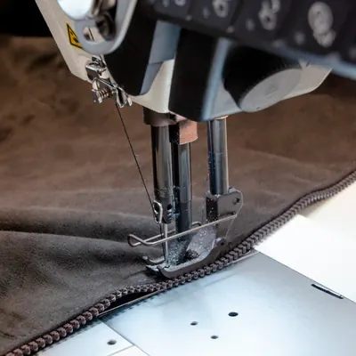
Lederjacken, Lederhosen und Motorradkombis. Ich arbeite mit JUKI-Industriemaschinen, die Leder bis 10 mm Dicke verarbeiten.
Meine Ledermaschine ist hart im Nehmen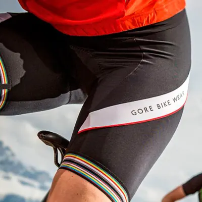
Jogging- und Velobekleidung, Gymnastikanzüge, Skibekleidung und Funktionswäsche. Mit Spezialmaschinen für elastische Stoffe: Säume, Nähte, Reissverschlüsse.
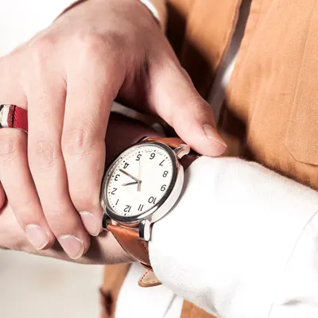
Knopf, geplatzte Naht oder Saum: Sie warten vor Ort. Grössere Arbeiten sind innert max. 3 Arbeitstagen fertig.
Kurzer Prozess für lange Hosen · Zuschlag +50 %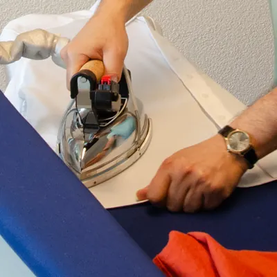
Keine Lust auf Waschen und Bügeln? Das mache ich gerne für Sie.
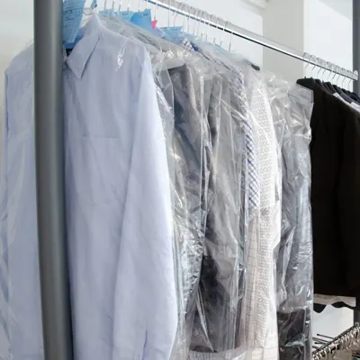
Bei problematischen Flecken oder empfindlichen Stoffen: schonende Reinigung in kürzester Zeit.
Das hängt vom Stück und vom Aufwand ab. Ich mache den Preis vor Ort mit Ihnen ab, bevor ich mit der Arbeit beginne. Oder Sie rufen an: 056 221 18 72
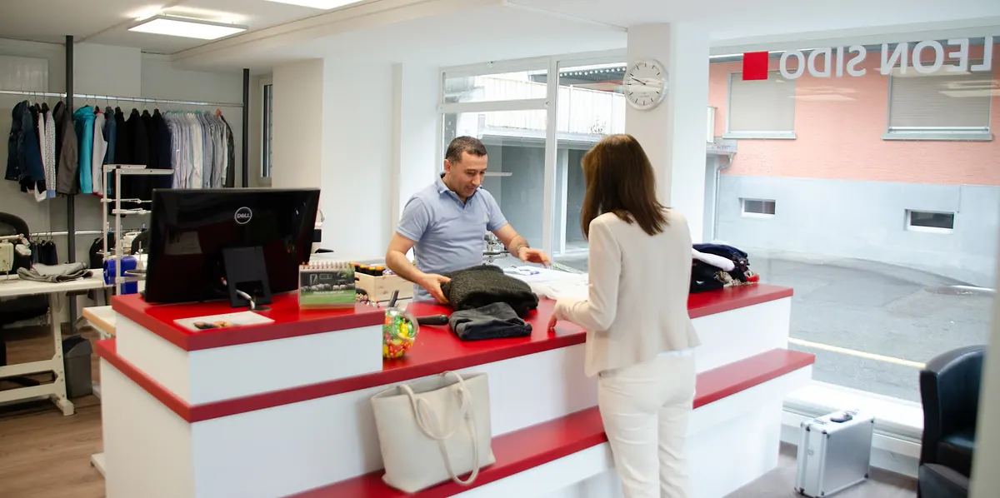
Das Handwerk habe ich von meiner Mutter gelernt. Sie nähte in meinem Heimatdorf in Syrien die Kleider für das ganze Dorf. 2001 kam ich in den Aargau. 2003 eröffnete ich mein erstes Atelier: 20 m² in der Bahnhofunterführung in Baden, ohne Tageslicht und mit einer Nähmaschine aus zweiter Hand.
Die Kundschaft wuchs stetig. Seit Mai 2019 arbeite ich an der Zürcherstrasse 10, auf 90 m² mit grossen Fenstern und modernen Leder-, Schnellnäh- und Kettelmaschinen.
«Es gibt immer noch viele Leute, die sich Qualität wünschen und nicht ab Stange kaufen wollen.»
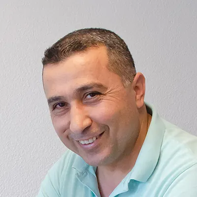
Für Massanfertigungen lohnt sich ein kurzer Anruf vorab.
| Montag | geschlossen |
| Dienstag | 09:00–12:00 13:30–18:00 |
| Mittwoch | 09:00–12:00 13:30–18:00 |
| Donnerstag | 09:00–12:00 13:30–18:00 |
| Freitag | 09:00–12:00 13:30–18:00 |
| Samstag | 09:00–12:00 13:00–16:00 |
| Sonntag | geschlossen |
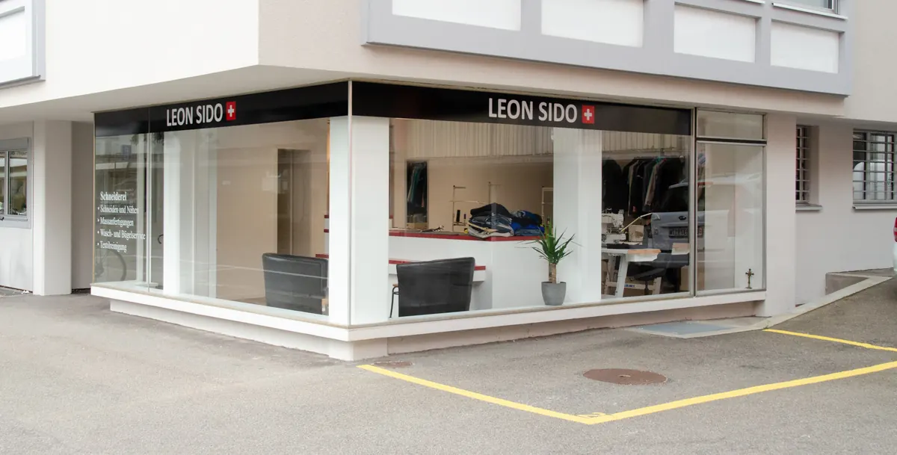
Das Atelier liegt an der Ecke mit dem roten «LEON SIDO»-Schild.
Route auf der KarteAm schnellsten erreichen Sie mich per Telefon während der Öffnungszeiten. Fragen zu einer Massanfertigung beantworte ich auch gerne per E-Mail.